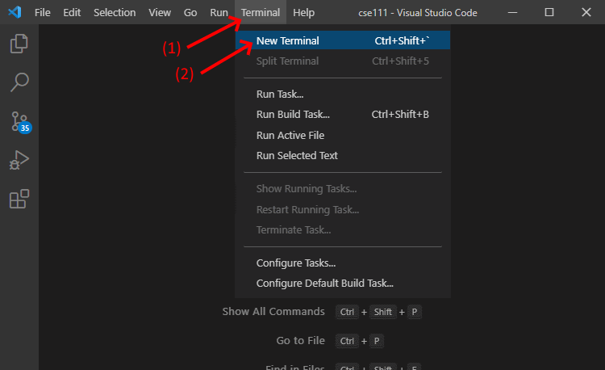
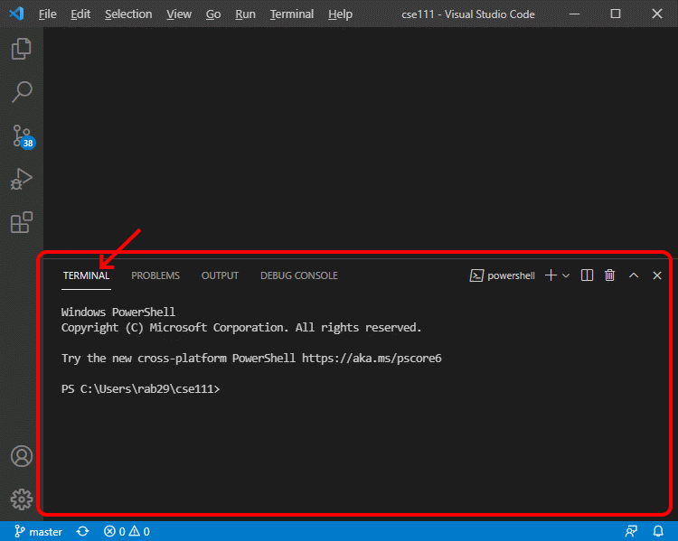
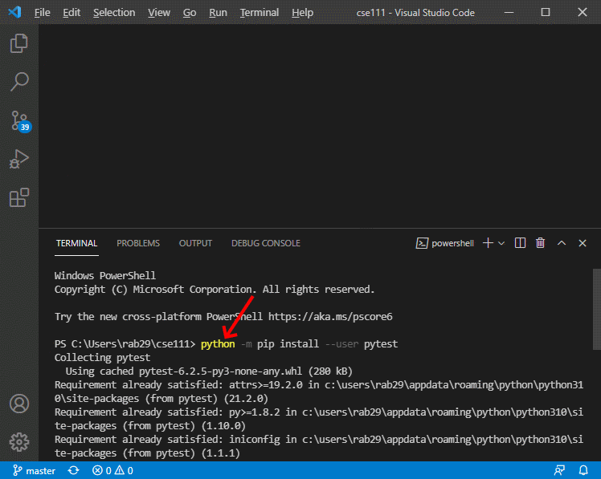
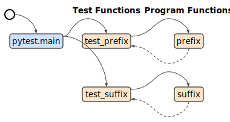

Improve your ability to verify the correctness of functions by
writing a test function and running it with pytest.
Assignment
Write a test function that tests a previously written function.
Then use pytest to run test functions.
Helpful Documentation
pip
is a standard Python module that you can use to download and
install third-party modules. During the checkpoint of this
lesson, you will use pip to download and install
pytest, so that you can use pytest in
your test code.
This
video about
the pip module(16 minutes) shows a BYU-Idaho
faculty member using pip to install other Python
modules.
The prepare
content for this lesson explains how to use
pytest, assert, and
approx to automatically verify that functions are
correct. It also contains an
example test function and links
to additional documentation about pytest.
This
video about
test functions(20 minutes)
shows a BYU-Idaho faculty member writing two test functions and
using pytest to run them.
Steps
Do the following:
Open a new terminal frame in VS Code by doing the
following:
Open VS Code
On the menu bar for VS Code, click "Terminal"
On the menu, click "New Terminal"

This will open a terminal frame at the bottom of the VS Code
window. A terminal is a window or frame where a user can type
and execute computer commands.

Copy and paste the following command into the terminal
frame and execute the command by pressing the Enter key. This
command will upgrade pip and several other parts of
the Python installation modules so that pip will
work correctly.
If your computer is running the Windows operating
system, and the above command doesn’t work on your
computer, try the py command instead of the
python command like this:
Install the pytest module by copying,
pasting, and executing the following command in the terminal
frame.
Mac OS users:
python3 -m pip install --user pytest
Windows users:
python -m pip install --user pytest
If your computer is running the Windows operating
system, and the above command doesn’t work on your
computer, try the py command instead of the
python command like this:
py -m pip install --user pytest

Download these two Python files:
words.py and
test_words.py
and save them in the same folder.
Open the downloaded words.py file in VS
Code. Notice the words.py file contains two small
functions named prefix and suffix.
Notice also that each function has a documentation string (a
triple quoted string immediately below a function header) that
describes what the function does. Read the documentation strings
for both functions.
Open the downloaded test_words.py file in
VS Code. In test_words.py examine the
test_prefix function. Notice that it takes no
parameters and contains nine assert statements.
Each assert statement calls the prefix function and
then compares the value returned from the prefix
function to the expected value.
In test_words.py write a function named
test_suffix that is similar to the
test_prefix function. The test_suffix
function should take no parameters and contain nine
assert statements that call the suffix
function with these parameters:
Arguments
Expected Return Value
s1
s2
""
""
""
""
"correct"
""
"clear"
""
""
"angelic"
"awesome"
""
"found"
"profound"
"found"
"ditch"
"itch"
"itch"
"happy"
"funny"
"y"
"tired"
"fatigued"
"ed"
"swimming"
"FLYING"
"ing"
Save your test_words.py file and run it by
clicking the green run icon in VS Code.
Testing Procedure
Verify that your test program works correctly by following each
step in this procedure:
Run your test program and ensure that your test
program’s output is similar to the sample run output
below.
When your program is finished, view the sample solution for this assignment to
compare your solution to that one. Before looking at the sample
solution, you should work to complete this checkpoint program.
However, if you have worked on it for at least an hour and are still
having problems, feel free to use the sample solution to help you
finish your program.
Call Graph
The following call graph shows the function calls and returns in
the sample solution for this assignment. From this call graph we see
that the computer starts executing the sample test functions by
calling the pytest.main function. While executing the
pytest.main function, the computer calls the
test_prefix function. While executing the
test_prefix function, the computer calls the
prefix function. Then while still executing the
pytest.main function, the computer calls the
test_suffix function. While executing the
test_suffix function, the computer calls the
suffix function.

Ponder
During this assignment, you downloaded a Python file that
contains two program functions named prefix and
suffix. You wrote a test function named
test_suffix that is similar to the
test_prefix function that was given to you. You used
pytest to run both test functions and examined the
output of pytest to verify that the test functions
passed. Because the test functions called prefix and
suffix with many different arguments and verified
(using assert) that the values returned from
prefix and suffix were correct, we can
assume that the prefix and suffix
functions work correctly. Do you think writing and running test
functions will help you write better programs?
Submission
When complete, report your progress in the associated I‑Learn
quiz.